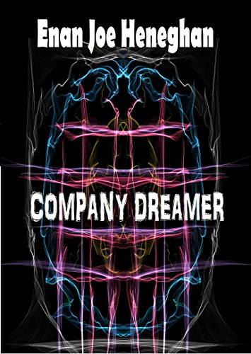

I have a rule from twenty years behind a counter where everything had a price sticker: budget closeness like merch, not like rent. Merch is joy you choose. Rent is obligation that chooses you and it does not bother to mention that. My rule is not that you should not buy it. My rule is that you should buy it awake.
Notice, name, choose. That's the whole method.
The clerk's shelf - how this got here first

NOVEL
Company Dreamer ↗The #1 dreamer in the world has her life rearranged to keep her end-dream in the black.
AEI, on Farrah Fawcett posters in 1976. It is the least sympathetic framing of the week and the most useful one.
I am going to defend this one against its own author. The Farrah Fawcett poster panic of 1976 and this piece are the same document written twice, and the thing worth noticing is that neither of them can imagine that a relationship could be real without being a dysfunction. A person naming a dog in a bar is not a symptom. Sometimes a friendship with a fictional person is the only friendship on offer, and the correct response is not a correction.
A long thread on the psychology of fan activity, and every branch of it points at the same postwar lab work.
I love this for a nerdy reason. The panics about fans being manipulated by fandoms turn out to be a fifty-year-old misreading of laboratory work, which is the most hopeful kind of debunk: it is not that the fans were right, it is that the people dismissing them had the facts backwards for half a century. My thesis was about performance and being witnessed. Even that is older than it looks.
ABC Triple J on why owning your back catalogue is a relationship with an audience, not just an artist decision.
Every other artist is watching this and copying the tactic without copying the thing that made it work, which is a decade of being unusually specific about who she was talking to. The re-records are legal housekeeping. The actual product is a fanbase that has been told, gently, for years, what it is. Closeness you did not have to manufacture is the only kind anybody has ever paid for.
And refuses the special pleading that it is only a pop thing.
The useful move here is refusing the special pleading. We say it is idols, and then it turns out the same wiring runs in football, a party leader, and a bank. Six hundred years before any of it, Margery Kempe put on white clothes in a world where widows wore black. Binding is public. The stage is much bigger than we admit and we are all standing on it.